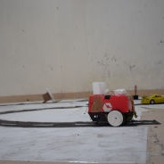
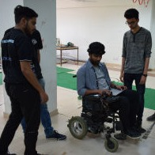

Humanoid Robotics is an emerging and challenging research field, Which palys a centeral role in Robotics. We made a humanoid shaped robot using servo motors while wood and thin metal sheets were used to give structure and rigidity.

Driver-Less Car
A self driving vehicle that is capable of sensing it's environment and moving with little or no human input. Autonomus cars commbine a variety of sensors to percieve their surrounding such as RADAR, computer vision, LADAR, SONAR, odometry and inertial measurement units.

BCI ( Brain Computer Interface)
We propose an innovative, futuristic and cost effective Brain Computer Interface (BCI) based wheelchair. The wheelchair helps the patient to navigate from one place to another based on motor imagery model to control a brain actuated wheelchair.